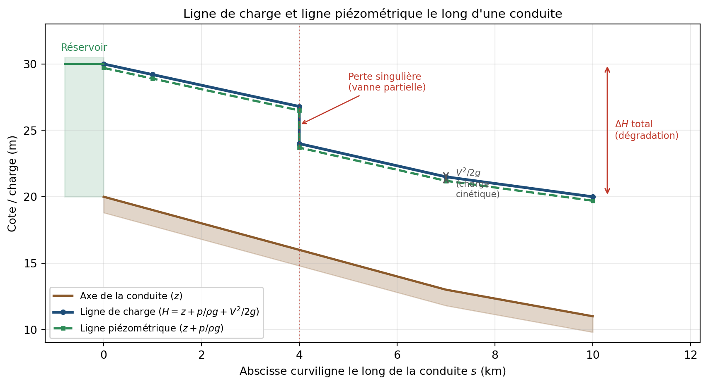
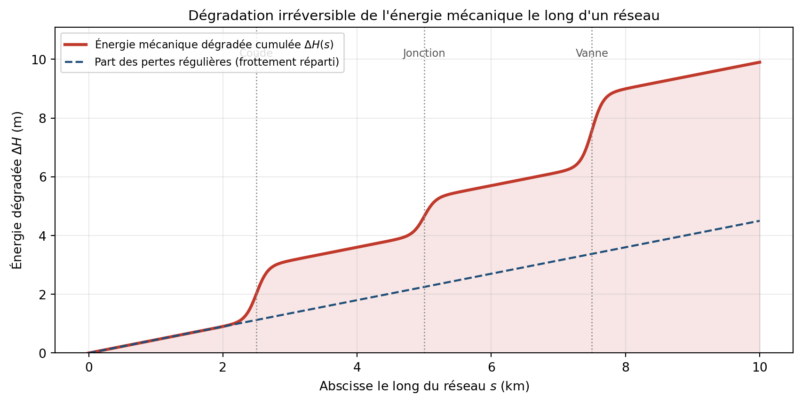
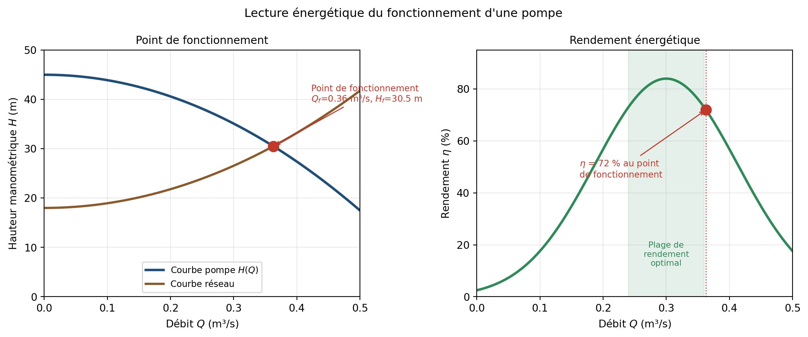
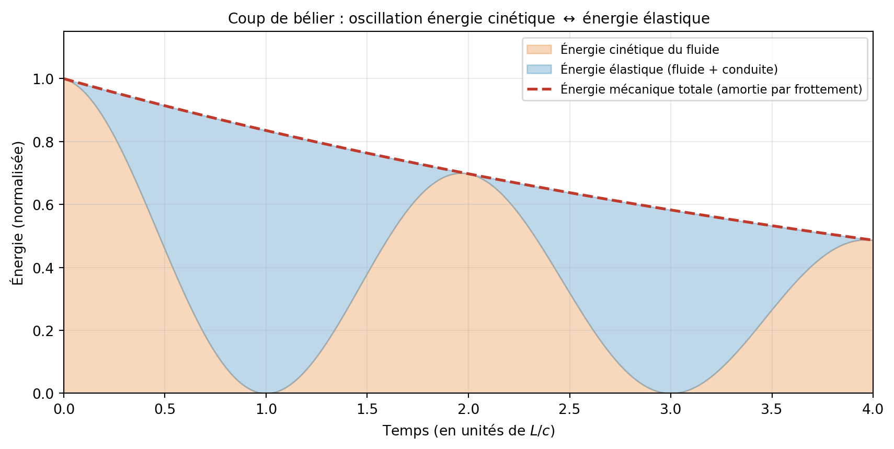

L’approche énergétique en hydraulique
Charge, puissance et dégradation : la grille de lecture du mécanicien
Hydraulique
Énergie
Modélisation
Ingénierie
NoteNote de fondement de la série
Cette note est l’une des notes de fondement transversal de la série sur la modélisation des réseaux hydrauliques. Elle complète la note introductive Généralités sur la modélisation des réseaux hydrauliques en posant le fil rouge énergétique qui traverse toute l’hydraulique appliquée. Comprendre l’écoulement comme un problème d’énergie — et pas seulement de forces et de débits — est le réflexe fondamental du mécanicien, et la clé qui éclaire la plupart des phénomènes traités dans le reste de la série.
1 Pourquoi raisonner en énergie ?
1.1 Le réflexe du mécanicien
Devant un système mécanique, l’ingénieur dispose toujours de deux grilles de lecture complémentaires : l’approche par les forces (le principe fondamental de la dynamique, \(\sum \vec{F} = m\vec{a}\)) et l’approche par l’énergie (le théorème de l’énergie mécanique, le bilan de puissance). Les deux sont rigoureusement équivalentes — elles décrivent la même physique — mais elles n’éclairent pas les mêmes aspects du problème.
L’approche par les forces est naturelle pour calculer une réaction d’appui, une poussée sur un coude, l’effort sur une vanne. L’approche énergétique est souvent plus puissante pour comprendre ce qui se passe : où l’énergie est apportée, où elle est stockée, où elle est dégradée, comment elle se transforme d’une forme en une autre.
En hydraulique, cette dualité est constamment présente mais rarement explicitée. La note introductive a posé les équations de conservation (masse et quantité de mouvement) — l’approche par les forces. Cette note pose l’approche énergétique, qui en est le complément indispensable.
1.2 Ce que l’énergie révèle que les forces masquent
Trois exemples, repris en détail dans la suite de cette note, montrent ce que l’approche énergétique apporte :
La perte de charge dans une conduite est, dans l’approche par les forces, le résultat d’un équilibre entre la pression motrice et le frottement pariétal. Dans l’approche énergétique, c’est une dégradation irréversible d’énergie mécanique en chaleur — un phénomène gouverné par le second principe de la thermodynamique, qui explique pourquoi on ne peut jamais “récupérer” une perte de charge.
Le coup de bélier est, dans l’approche par les forces, une onde de surpression qui se propage à la célérité \(c\). Dans l’approche énergétique, c’est une conversion oscillante entre l’énergie cinétique du fluide en mouvement et l’énergie élastique stockée dans la compression du fluide et la déformation de la conduite — une lecture qui explique immédiatement pourquoi l’amplitude de la surpression dépend de la vitesse initiale et de la rigidité de la conduite.
Le dimensionnement d’une station de pompage est, dans l’approche par les forces, un problème de pression à fournir. Dans l’approche énergétique, c’est un problème de puissance et de rendement — la grille qui relie directement le dimensionnement hydraulique à la facture d’électricité de l’exploitant.
2 L’énergie mécanique d’un fluide
2.1 Les trois formes de l’énergie mécanique
Une particule de fluide en écoulement possède de l’énergie mécanique sous trois formes :
L’énergie potentielle de position : liée à l’altitude \(z\) de la particule dans le champ de pesanteur. Par unité de poids de fluide, elle vaut simplement \(z\) (en mètres).
L’énergie potentielle de pression : liée à la pression \(p\) régnant dans le fluide. Une particule sous pression peut fournir un travail en se détendant — c’est une énergie stockée. Par unité de poids, elle vaut \(p / (\rho g)\) (en mètres).
L’énergie cinétique : liée à la vitesse \(V\) de la particule. Par unité de poids, elle vaut \(V^2 / (2g)\) (en mètres).
2.2 La charge hydraulique comme énergie
La somme de ces trois termes est la charge hydraulique \(H\) :
\[H = z + \frac{p}{\rho g} + \frac{V^2}{2g}\]
Le point fondamental, souvent oublié dans la pratique, est que \(H\) est une énergie — précisément l’énergie mécanique totale du fluide par unité de poids. Son unité est le mètre, mais cette longueur représente une énergie : c’est la hauteur dont il faudrait faire chuter le poids du fluide pour libérer une énergie équivalente à son énergie mécanique.
2.3 Pourquoi diviser par \(\rho g\) ?
L’énergie mécanique d’un volume \(\mathcal{V}\) de fluide s’écrirait, en joules :
\[E = \underbrace{\rho \mathcal{V} g z}_{\text{potentielle position}} + \underbrace{p \mathcal{V}}_{\text{pression}} + \underbrace{\frac{1}{2}\rho \mathcal{V} V^2}_{\text{cinétique}}\]
En divisant par le poids du volume de fluide \(\rho \mathcal{V} g\), on obtient l’énergie par unité de poids — et chaque terme devient une longueur :
\[\frac{E}{\rho \mathcal{V} g} = z + \frac{p}{\rho g} + \frac{V^2}{2g} = H\]
Cette normalisation par le poids n’est pas un artifice de calcul — c’est le choix qui rend l’hydraulique pratique. Toutes les grandeurs (charge, perte de charge, hauteur de pompe) s’expriment en mètres, directement comparables à des cotes altimétriques et à des hauteurs d’eau. C’est cette commodité qui a fait de la charge hydraulique le langage universel de l’ingénierie de l’eau — au prix d’un oubli fréquent : derrière chaque mètre de charge se cache une énergie.
AstuceCharge, énergie, et les autres normalisations
On peut aussi normaliser l’énergie par unité de masse (en J/kg, on obtient \(gz + p/\rho + V^2/2\)) ou par unité de volume (en J/m³ = Pa, on obtient \(\rho g z + p + \rho V^2/2\)). La normalisation par unité de volume donne des pressions — c’est la formulation préférée en mécanique des fluides théorique. La normalisation par unité de poids donne des hauteurs — c’est la formulation de l’hydraulicien. Les trois décrivent la même énergie ; seule l’unité change.
3 Ligne de charge et ligne piézométrique
3.1 Deux lignes, deux énergies
La représentation graphique de l’énergie le long d’un écoulement est l’un des outils les plus puissants de l’hydraulicien. On trace deux lignes le long du profil de la conduite ou du canal :
La ligne de charge (ou ligne d’énergie) représente la charge totale \(H = z + p/\rho g + V^2/2g\) — l’énergie mécanique totale par unité de poids. En l’absence de pompe ou de turbine, elle ne peut que décroître dans le sens de l’écoulement (la dégradation par frottement ne peut qu’ôter de l’énergie).
La ligne piézométrique représente la charge sans le terme cinétique : \(z + p/\rho g\) — l’énergie potentielle (position + pression) par unité de poids. C’est la cote qu’atteindrait l’eau dans un tube piézométrique branché sur la conduite. L’écart entre la ligne de charge et la ligne piézométrique est exactement la charge cinétique \(V^2/2g\).
3.2 Lire une ligne de charge
La pente de la ligne de charge a une signification physique directe : c’est le taux de dégradation de l’énergie mécanique par unité de longueur. Une pente forte signifie une dégradation rapide (tronçon de fort frottement, vitesse élevée). Un saut vertical signale une dégradation localisée — une perte de charge singulière à un ouvrage (vanne, coude, jonction).
La position relative des deux lignes est aussi riche d’enseignement :
- Si la ligne piézométrique passe en dessous de l’axe de la conduite, la pression y est négative (dépression) — risque de cavitation et d’entrée d’air.
- Si la ligne piézométrique est au-dessus du terrain naturel, une fuite éventuelle se traduit par une sortie d’eau sous pression.
- L’écart constant entre les deux lignes (quand la section est constante) confirme que la charge cinétique ne varie pas — tout le travail du frottement se fait au détriment de la pression.
4 Le théorème de Bernoulli comme bilan d’énergie
4.1 La forme conservative
Pour un écoulement permanent de fluide parfait incompressible (sans frottement), le théorème de Bernoulli énonce que la charge se conserve le long d’une ligne de courant :
\[z + \frac{p}{\rho g} + \frac{V^2}{2g} = \text{constante}\]
Lu énergétiquement, cet énoncé est le théorème de conservation de l’énergie mécanique appliqué au fluide : en l’absence de dissipation, l’énergie mécanique totale par unité de poids reste constante. Le fluide peut échanger de l’énergie entre ses trois formes (convertir de l’énergie de pression en énergie cinétique en accélérant dans un rétrécissement, par exemple), mais la somme reste invariante.
4.2 La forme généralisée avec dégradation
Aucun écoulement réel n’est sans frottement. Le théorème de Bernoulli généralisé introduit un terme de dégradation énergétique \(\Delta H_{1 \to 2}\) entre deux sections :
\[\underbrace{z_1 + \frac{p_1}{\rho g} + \frac{V_1^2}{2g}}_{H_1 \text{ : énergie en amont}} = \underbrace{z_2 + \frac{p_2}{\rho g} + \frac{V_2^2}{2g}}_{H_2 \text{ : énergie en aval}} + \underbrace{\Delta H_{1 \to 2}}_{\text{énergie dégradée}}\]
Cette équation est un bilan d’énergie mécanique : l’énergie mécanique en amont se retrouve en aval, diminuée de la part irréversiblement dégradée en chaleur par le frottement. Chaque terme a une interprétation énergétique précise :
- \(z\) : énergie potentielle de position échangeable réversiblement (un fluide qui monte stocke de l’énergie, un fluide qui descend la restitue)
- \(p/\rho g\) : énergie de pression échangeable réversiblement (compression/détente)
- \(V^2/2g\) : énergie cinétique échangeable réversiblement (accélération/décélération)
- \(\Delta H_{1 \to 2}\) : énergie mécanique perdue irréversiblement — elle ne reviendra jamais sous forme mécanique
Cette dernière distinction est fondamentale et c’est elle que l’approche énergétique met en lumière : les trois premiers termes sont des formes interchangeables de l’énergie mécanique, le quatrième est une fuite définitive vers l’énergie thermique.
5 La dégradation énergétique
5.1 La perte de charge est une conversion irréversible
Le terme \(\Delta H\) que l’hydraulicien appelle “perte de charge” porte un nom trompeur du point de vue énergétique. L’énergie n’est pas “perdue” au sens où elle disparaîtrait — le premier principe de la thermodynamique l’interdit. Elle est convertie : l’énergie mécanique dégradée par le frottement visqueux et la turbulence se retrouve sous forme d’énergie thermique — le fluide et la conduite s’échauffent très légèrement.
Cette conversion est irréversible : le second principe de la thermodynamique interdit que cette énergie thermique se reconvertisse spontanément en énergie mécanique organisée. C’est pourquoi une perte de charge ne se “récupère” jamais — contrairement à une conversion énergie de pression ↔︎ énergie cinétique, qui est réversible.

5.2 Quel échauffement ?
L’ordre de grandeur de l’échauffement associé à une perte de charge est instructif. Une perte de charge \(\Delta H\) (en mètres) correspond à une énergie dégradée par unité de masse de \(g \Delta H\) (en J/kg). Si toute cette énergie échauffe le fluide (capacité thermique massique de l’eau \(c_{eau} \approx 4185\) J/(kg·K)), l’élévation de température est :
\[\Delta T = \frac{g \Delta H}{c_{eau}}\]
Pour une perte de charge de 100 m (un ordre de grandeur élevé, typique d’un long refoulement) :
\[\Delta T = \frac{9{,}81 \times 100}{4185} \approx 0{,}23 \text{ °C}\]
L’échauffement est minuscule — c’est pourquoi on l’ignore en pratique pour l’hydraulique. Mais ce calcul rappelle une réalité physique : l’énergie dégradée ne disparaît pas, elle chauffe l’eau. Ce principe devient important dans certains contextes : conduites forcées de grande chute, circuits de refroidissement industriels, et plus généralement tout couplage hydraulique-thermique (traité dans une note dédiée de la série).
NoteLe lien avec l’entropie
La dégradation énergétique est, au sens thermodynamique strict, une production d’entropie. Le frottement visqueux convertit de l’énergie mécanique organisée (mouvement d’ensemble du fluide) en agitation thermique désordonnée (énergie interne). Cette production d’entropie est la signature de l’irréversibilité — et c’est elle qui rend la perte de charge fondamentalement différente des échanges réversibles entre les trois formes de l’énergie mécanique. L’hydraulicien qui dit “perte de charge” décrit en réalité une production d’entropie.
6 La puissance hydraulique
6.1 De l’énergie à la puissance
L’énergie par unité de poids (la charge \(H\)) devient une puissance dès qu’on la multiplie par le débit-poids \(\rho g Q\) (le poids de fluide qui transite par seconde). La puissance hydraulique d’un écoulement de débit \(Q\) et de charge \(H\) est :
\[P_{hyd} = \rho g Q H \qquad \text{(en watts)}\]
Cette grandeur est la clé qui relie l’hydraulique à l’énergétique opérationnelle :
- La puissance dégradée dans un tronçon est \(P_{deg} = \rho g Q \Delta H\) — c’est la puissance mécanique irréversiblement perdue par frottement.
- La puissance fournie par une pompe est \(P_{pompe} = \rho g Q H_{pompe}\) — l’énergie mécanique apportée au fluide par seconde.
- La puissance récupérable par une turbine est \(P_{turbine} = \rho g Q H_{turbine}\) — l’énergie mécanique extraite du fluide par seconde.
6.2 Le rendement énergétique d’une pompe
Une pompe ne convertit jamais intégralement l’énergie électrique qu’elle consomme en énergie hydraulique fournie au fluide. Le rendement \(\eta\) caractérise cette conversion :
\[\eta = \frac{P_{hyd}}{P_{absorbée}} = \frac{\rho g Q H}{P_{électrique}}\]
La puissance électrique réellement consommée est donc :
\[P_{électrique} = \frac{\rho g Q H}{\eta}\]
Cette relation est le pont direct entre le dimensionnement hydraulique et la facture énergétique de l’exploitant. Elle montre aussi pourquoi le point de fonctionnement d’une pompe doit se situer dans sa plage de rendement optimal : une pompe qui fonctionne loin de son rendement maximal consomme une énergie électrique disproportionnée pour le service rendu.

6.3 Le rendement énergétique global d’un réseau
À l’échelle d’un réseau entier, on peut définir un rendement énergétique global : le rapport entre l’énergie hydraulique utile (celle effectivement délivrée aux usagers à la pression requise) et l’énergie totale fournie (par les pompes et/ou par la gravité). Ce rendement est dégradé par toutes les pertes de charge du réseau — chaque mètre de perte de charge est une fraction de l’énergie d’entrée convertie en chaleur plutôt qu’en service rendu.
Cette lecture énergétique globale est devenue un enjeu opérationnel majeur : dans un contexte de coût croissant de l’énergie, l’efficience énergétique des réseaux d’eau (réduction des pertes de charge évitables, optimisation du pompage, récupération d’énergie par micro-turbines sur les conduites en charge excédentaire) est un domaine en plein développement.
7 Le coup de bélier vu sous l’angle énergétique
7.1 Une conversion énergie cinétique ↔︎ énergie élastique
Le coup de bélier est traité en détail dans une note dédiée de la série, sous l’angle des ondes et de la méthode des caractéristiques. L’approche énergétique en donne une lecture complémentaire particulièrement éclairante.
Lorsqu’une vanne se ferme brusquement, le fluide en mouvement possède une énergie cinétique \(\frac{1}{2}\rho \mathcal{V} V_0^2\). Cette énergie ne peut pas disparaître instantanément. Elle se convertit en énergie élastique : l’énergie de compression du fluide (l’eau est légèrement compressible) et l’énergie de déformation élastique de la paroi de la conduite (qui se dilate sous la surpression).
Cette conversion énergie cinétique → énergie élastique est réversible (aux pertes par frottement près) : l’énergie élastique stockée se reconvertit en énergie cinétique lorsque l’onde repart en sens inverse, et le cycle recommence. C’est pourquoi le coup de bélier est un phénomène oscillant — un échange périodique entre deux formes d’énergie, exactement comme un pendule échange énergie cinétique et énergie potentielle.

7.2 Pourquoi l’énergie explique l’amplitude
L’approche énergétique explique immédiatement deux faits expérimentaux du coup de bélier qui semblent mystérieux dans l’approche par les forces seule :
Pourquoi la surpression est-elle proportionnelle à la vitesse initiale \(V_0\) ? Parce que l’énergie cinétique à convertir est \(\frac{1}{2}\rho \mathcal{V} V_0^2\) et que la surpression correspond au stockage de cette énergie sous forme élastique. Plus la vitesse initiale est grande, plus il y a d’énergie cinétique à “absorber” élastiquement, donc plus la surpression est forte. (La formule de Joukowsky \(\Delta H = c V_0 / g\) est la traduction quantitative de ce bilan énergétique.)
Pourquoi une conduite rigide génère-t-elle des surpressions plus fortes qu’une conduite souple ? Parce que la même énergie cinétique doit être stockée sous forme élastique. Une conduite souple (PE, PVC) se déforme facilement — elle “absorbe” l’énergie en se dilatant, sans monter trop en pression. Une conduite rigide (acier, fonte) se déforme peu — toute l’énergie élastique se stocke sous forme de compression du fluide, ce qui exige une surpression beaucoup plus élevée. La rigidité du système conditionne la “raideur” de ce ressort énergétique, donc l’amplitude de la pression.
Cette lecture énergétique est exactement celle qui sous-tend la formule de la célérité de Korteweg : la célérité \(c\) dépend du module de compressibilité de l’eau et du module d’élasticité de la conduite — les deux “ressorts” qui stockent l’énergie élastique.
8 L’énergie dans chaque domaine de l’eau
L’approche énergétique offre une grille de lecture transversale aux trois grands domaines traités dans la série :
En adduction d’eau potable, l’énergie est avant tout un coût d’exploitation. Le pompage représente souvent le premier poste de dépense énergétique d’un service d’eau. Chaque perte de charge évitable (conduite sous-dimensionnée, vanne mal réglée, rugosité accrue par entartrage) est une surconsommation électrique directe. La lecture énergétique du réseau AEP est donc indissociable de son optimisation économique.
En assainissement gravitaire, l’énergie est essentiellement fournie par la gravité et dégradée par le frottement. Le dimensionnement consiste à organiser cette dégradation : assez de pente pour assurer l’auto-curage (vitesse suffisante = énergie cinétique suffisante pour transporter les sédiments), mais pas trop pour éviter les vitesses érosives et la nécessité de dissipateurs d’énergie aux chutes. L’auto-curage lui-même est, énergétiquement, la condition que l’énergie de l’écoulement soit suffisante pour maintenir les particules en mouvement plutôt que de les laisser se déposer.
En irrigation gravitaire, l’énergie disponible est celle du dénivelé topographique entre la ressource et les parcelles. Toute la conception d’un réseau gravitaire consiste à gérer cette énergie : la distribuer équitablement entre les prises (uniformité), la dissiper de façon contrôlée aux ouvrages de régulation, et éviter de la gaspiller en pertes par infiltration. En irrigation sous pression, l’énergie est fournie par pompage — et la contrainte d’uniformité de distribution se lit énergétiquement comme une contrainte sur l’homogénéité de l’énergie disponible aux émetteurs.
9 Conclusion
L’approche énergétique n’est pas un point de vue parmi d’autres sur l’hydraulique — c’est la grille de lecture qui unifie l’ensemble des phénomènes traités dans cette série. La charge est une énergie. La perte de charge est une dégradation irréversible de cette énergie en chaleur, gouvernée par le second principe. Le coup de bélier est une oscillation entre énergie cinétique et énergie élastique. Le dimensionnement d’une pompe est un problème de puissance et de rendement. L’auto-curage est une condition énergétique sur l’écoulement.
Garder cette grille de lecture à l’esprit transforme la compréhension des phénomènes hydrauliques : là où l’approche par les forces décrit ce qui se passe, l’approche énergétique explique souvent pourquoi cela se passe ainsi. Le réflexe du mécanicien — toujours doubler l’analyse des forces d’un bilan d’énergie — est l’une des compétences les plus précieuses de l’ingénieur hydraulicien.
Les notes suivantes de la série mobiliseront constamment cette double lecture : chaque fois qu’un phénomène est décrit par ses équations de quantité de mouvement, il sera utile de se demander où est l’énergie, sous quelle forme, et comment elle se transforme.
10 Pour aller plus loin dans cette série
- Note 0.1 — Généralités sur la modélisation des réseaux hydrauliques : la cascade dimensionnelle et les régimes, à relire sous l’angle énergétique
- Note 0.3 — Les ouvrages hydrauliques : physique et conditions aux limites : chaque ouvrage comme un point d’apport, de stockage ou de dégradation d’énergie
- Note 2.A2 — Coups de bélier en réseau AEP : le traitement complet du coup de bélier, dont cette note donne la lecture énergétique
- Note 2.D — Pompes et turbines : machines hydrauliques en réseau : l’apport et l’extraction d’énergie mécanique au fluide
- Note 3.3 — Qualité de l’eau et thermique : le couplage entre l’écoulement et les transferts thermiques, prolongement de la dégradation énergétique